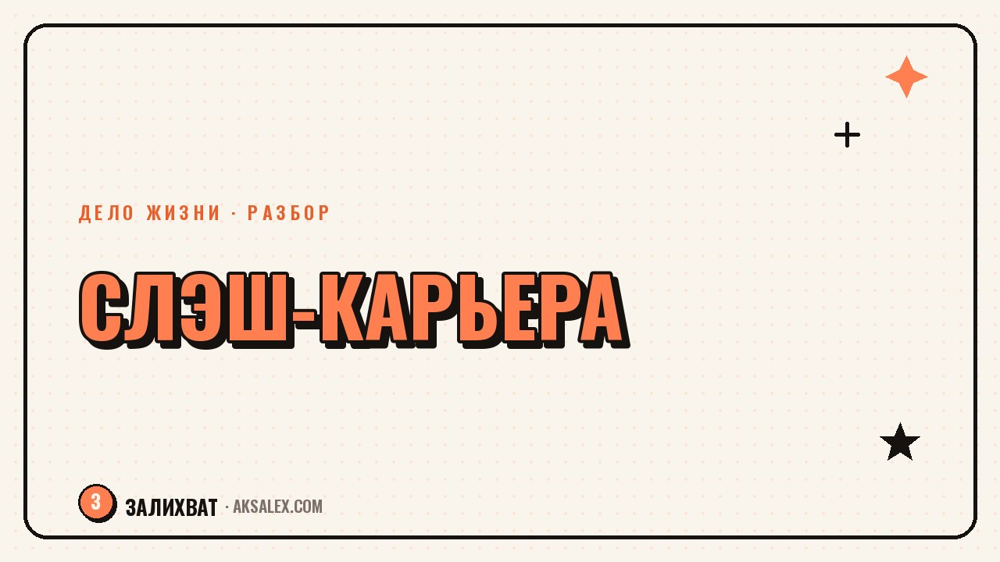

Слэш-карьера: как совмещать несколько любимых дел без хаоса

Слэш-карьера - это когда ты не укладываешься в одну профессию через дефис, а описываешь себя через слэш: копирайтер / керамист, бухгалтер / фотограф свадеб. Со стороны это выглядит как метание, но часто это честный способ жить с несколькими интересами, не предавая ни один из них. Вопрос не в том, выбрать ли одно дело, а в том, как устроить несколько так, чтобы они не разваливали друг друга.
Почему слэш-карьера - это не метание, а формат
Долгое время было принято считать, что серьёзный профессионал занимается одним делом всю жизнь, а тот, кто пробует разное, просто не нашёл себя. На практике многие люди устроены иначе: им нужно несколько разных типов активности, чтобы чувствовать себя живыми - одно дело кормит голову, другое руки, третье закрывает потребность в общении с людьми.
Разница между хаотичным метанием и осознанной слэш-карьерой в одном: в первом случае человек бросает одно дело, не доведя до результата, и хватается за следующее от тревоги. Во втором - каждое дело живёт своей жизнью, у него есть время в календаре и понятная роль, и человек сам выбирает, сколько внимания ему уделять в этот месяц.
Как понять, что у тебя действительно слэш-карьера, а не бегство
Признаки здорового совмещения
- Каждое дело приносит что-то своё: деньги, смысл, отдых или общение
- Ты можешь назвать, зачем тебе каждое из дел, без паузы на подумать
- Переключение между делами даёт отдых, а не ощущение, что убегаешь
- Есть хотя бы минимальный результат в каждом направлении за последний год
Если же при честном взгляде на список дел ты видишь, что берёшься за новое каждый раз, когда предыдущее стало сложным или потребовало дисциплины - это, скорее, бегство от трудностей, а не слэш-карьера. В этом случае важнее разобраться со страхом трудностей, а не добавлять ещё одно направление.
Как распределить время между несколькими делами
Самая частая ошибка - пытаться уделять всем делам поровну каждую неделю. Это редко работает, потому что дела разные по природе: одно требует ежедневной рутины, как изучение языка, другое - концентрированных блоков, как съёмка и монтаж видео раз в месяц.
Не всем делам нужно одинаковое количество времени. Некоторым нужно постоянство, а некоторым - просто место в календаре, куда можно вернуться без чувства вины за перерыв.
| Тип дела | Как часто возвращаться | Риск при совмещении |
|---|---|---|
| Основной доход | Ежедневно или по графику работы | Съедает всё время, если не ограничить рамками |
| Творческое хобби на продажу | Несколько раз в неделю блоками | Превращается в обязанность и теряет радость |
| Чистое хобби без денег | По настроению, без графика | Исчезает первым при нагрузке - береги его специально |
| Новое направление на пробу | Небольшие эксперименты раз в месяц | Либо забирает ресурс основного дела, либо остаётся мечтой |
Как говорить о слэш-карьере с другими без оправданий
Окружающим часто неудобно слышать длинный список занятий - им проще, когда человек представляется одним словом. Не обязательно оправдываться и объяснять каждому, почему у тебя так. Достаточно короткой формулировки: "я работаю в двух направлениях, вот в этих", без извиняющегося тона.
Полезно иметь разные версии самопрезентации под разный контекст: для клиентов одного направления не нужно рассказывать про другое, если это не связано с задачей. А для близких людей, которые искренне интересуются, можно рассказать подробнее про то, как это всё устроено и зачем тебе это нужно.
Когда слэш-карьеру пора сократить
Если дел становится четыре-пять и ты чувствуешь, что ни одно не двигается вперёд, а только держится на плаву - это сигнал сократить количество направлений, а не добавить тайм-менеджмент. Чем больше направлений, тем меньше глубины в каждом, и в какой-то момент это начинает мешать результату.
Раз в полгода имеет смысл честно пересматривать список своих дел: что из этого всё ещё даёт энергию, а что превратилось в привычку по инерции. Направление можно поставить на паузу без драмы - это не предательство дела, а признание, что сейчас ресурса на него нет.
Частые вопросы
Что такое слэш-карьера простыми словами?
Это формат, когда человек совмещает несколько направлений деятельности, а не выбирает одну профессию на всю жизнь. Название идёт от знака слэш, которым разделяют два занятия в самопрезентации, например дизайнер / преподаватель йоги.
Сколько направлений можно совмещать одновременно без вреда для результата?
Чаще всего комфортно держать два-три направления с разной ролью: одно основное, приносящее доход, и одно-два дополнительных для смысла и отдыха. Больше четырёх направлений обычно размывают внимание и мешают добиться результата в каждом.
Как понять, что совмещение дел - это слэш-карьера, а не бегство от трудностей?
Если ты можешь объяснить, зачем тебе каждое дело, и видишь хоть небольшой результат в каждом за последний год - это осознанное совмещение. Если же новое дело появляется каждый раз, когда предыдущее стало сложным, вероятнее, что это бегство от трудностей.
Как объяснять слэш-карьеру работодателю или клиентам?
Не нужно рассказывать про все направления сразу - достаточно говорить о той части, которая относится к конкретному контексту. Клиенту одного направления обычно не важно, чем ты занимаешься в остальное время, если это не мешает выполнять задачи.
Что делать, если несколько дел совмещать стало тяжело?
Стоит честно пересмотреть список направлений и понять, какие из них всё ещё дают энергию, а какие держатся по инерции. Можно временно поставить часть дел на паузу - это не предательство, а способ сохранить силы для того, что сейчас важнее.
Раз тема оказалась полезной, вот что почитать следующим. Выбираешь школу или садик для ребёнка? Разбираем, как нейросети помогают собрать и сравнить информацию без беготни по сайтам.
Читать статью →а не вручную